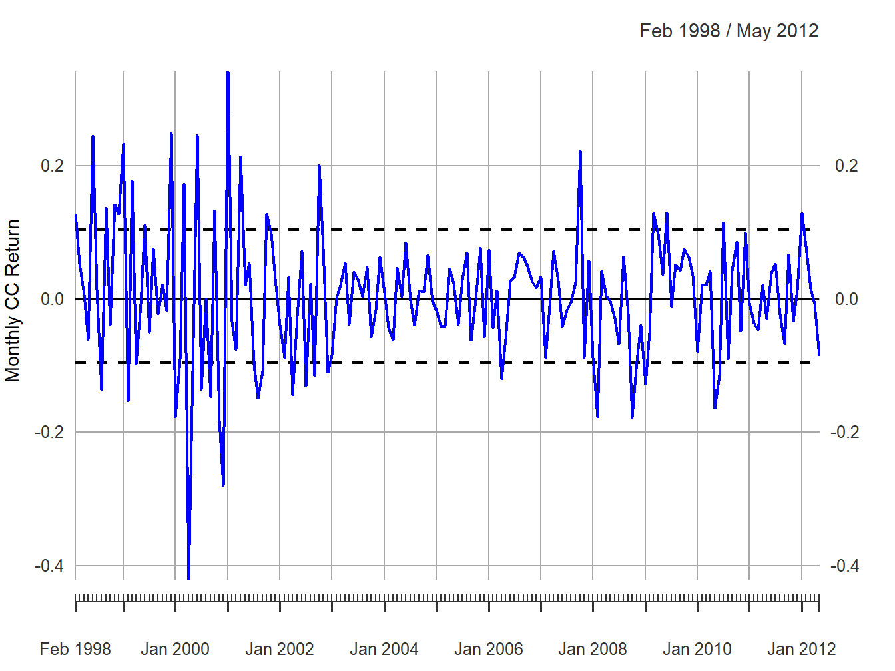
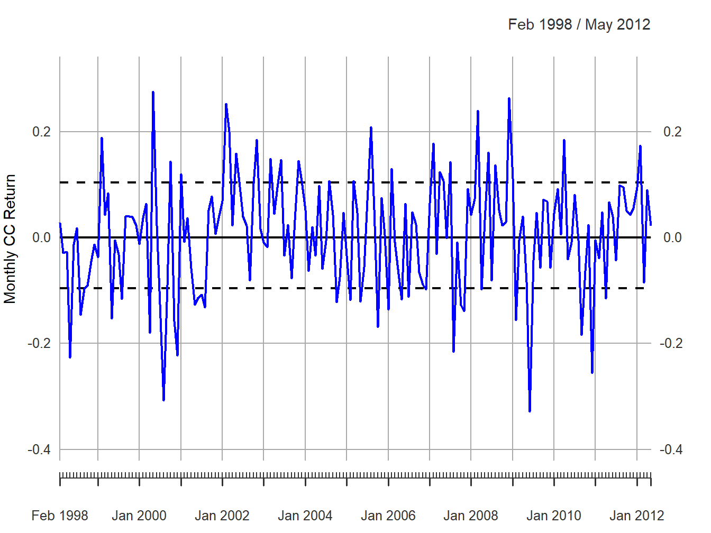
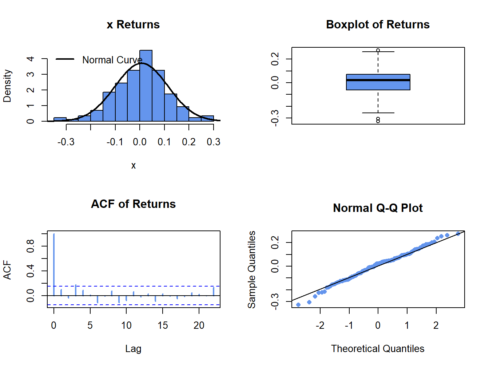
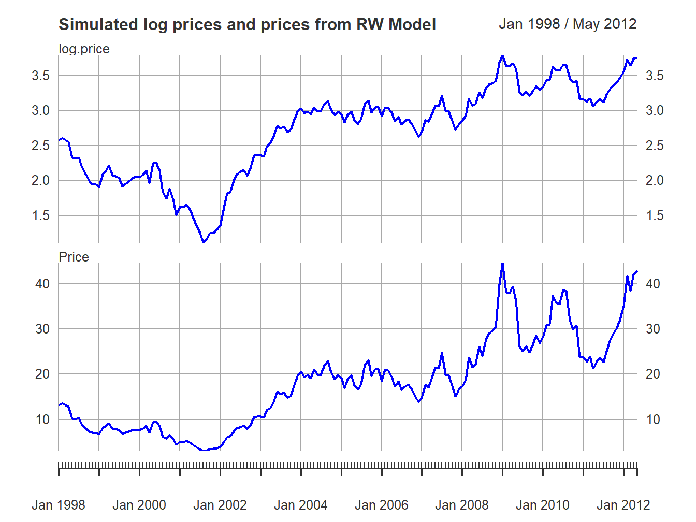
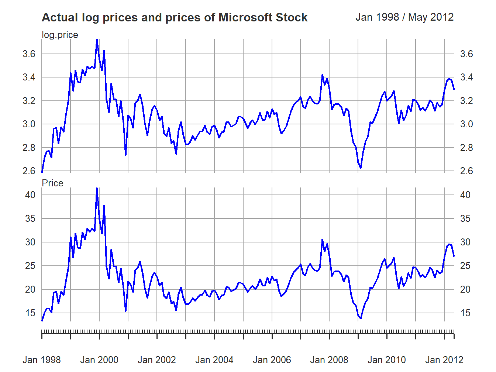
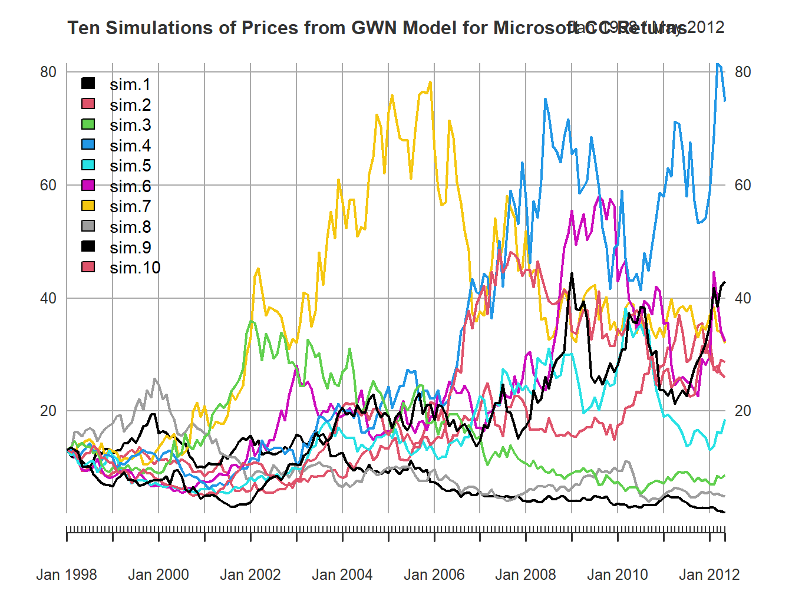
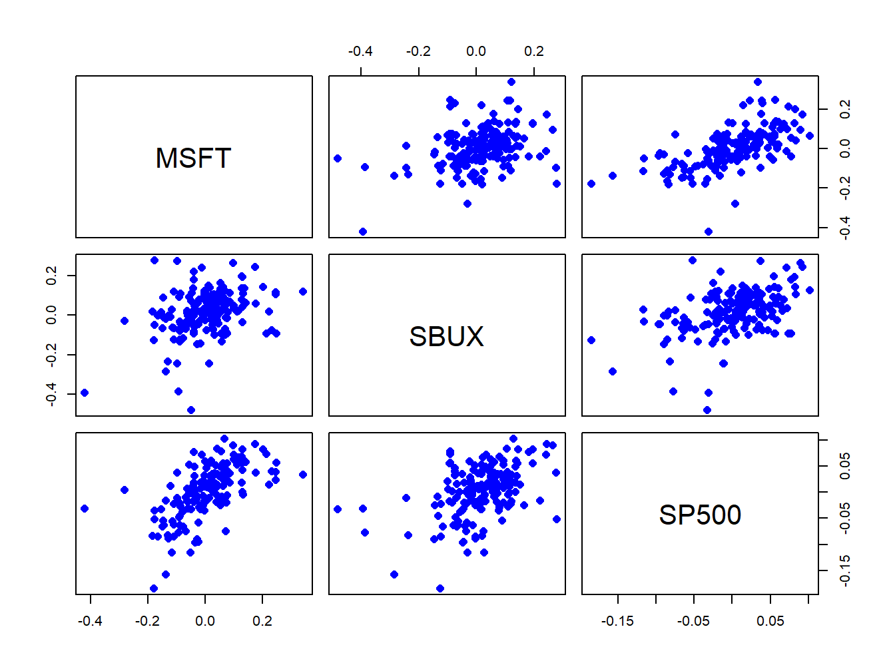
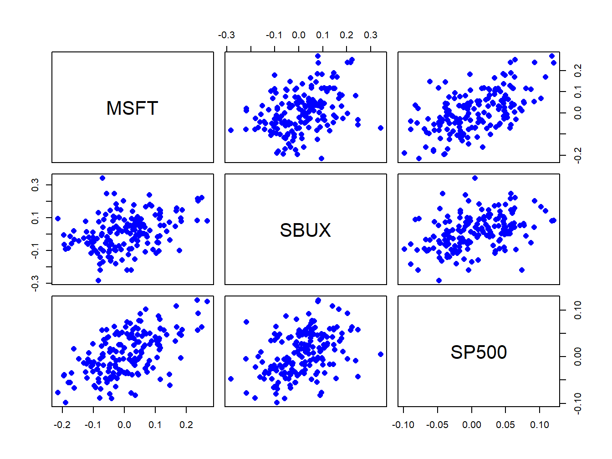

The first model of asset returns I consider is the very simple Gaussian White Noise (GWN) model . This model is motivated by the stylized facts for monthly asset returns discussed in the previous chapter. The GWN model assumes that an asset’s return (simple or continuously compounded) over time is independent and identically normally distributed. The model allows for the returns on different assets to be contemporaneously correlated but does not allow for any lead-lag cross correlations. The GWN model is widely used in finance. For example, it is used in risk analysis (e.g., for computing Value-at-Risk) for assets and portfolios, in mean-variance portfolio analysis, in the Capital Asset Pricing Model (CAPM), and in the Black-Scholes option pricing model. Although this model is very simple, it provides important intuition about the statistical behavior of asset returns and prices and serves as a benchmark against which more sophisticated models can be compared and evaluated. It allows me to discuss and develop several important econometric topics such as Monte Carlo simulation, estimation, bootstrapping, hypothesis testing, forecasting, and model evaluation that are discussed in later chapters.
The outline of this chapter is as follows. In Section 6.1 I review the assumptions of the GWN model and presents several equivalent specifications of the model. I also discuss the application of the model to continuously compounded returns, simple returns, and portfolios. In Section 6.2 I illustrate Monte Carlo simulation of the GWN model as a first-step reality check of the model.
The R packages I use in this chapter are introcompfinr, mvtnorm, and PerformanceAnalytics. Make sure these packages are installed and loaded before running the R examples in the chapter.
6.1 GWN Model Assumptions
Let \(R_{it}\) denote the simple or continuously compounded (cc) return on asset \(i\) over the investment horizon between times \(t-1\) and \(t\) (e.g., monthly returns). I make the following assumptions regarding the probability distribution of \(R_{it}\) for \(i=1,\ldots,N\) assets for all times \(t\).
Assumption GWN
Covariance stationarity and ergodicity: \(\{R_{i1},\ldots,R_{iT}\}=\{R_{it}\}_{t=1}^{T}\) is a covariance stationary and ergodic stochastic process with \(E[R_{it}]=\mu_{i},\)\(\mathrm{var}(R_{it})=\sigma_{i}^{2}\), \(\mathrm{cov}(R_{it},R_{jt})=\sigma_{ij}\) and \(\mathrm{cor}(R_{it},R_{jt})=\rho_{ij}\).
Normality: \(R_{it}\sim N(\mu_{i},\sigma_{i}^{2})\) for all \(i\) and \(t\), and all joint distributions are normal.
No serial correlation: \(\mathrm{cov}(R_{it},R_{js})=\mathrm{cor}(R_{it},R_{is})=0\) for \(t\neq s\) and \(i,j=1,\ldots,N\).
Assumption GWN states that in every time period asset returns are jointly (multivariate) normally distributed, that the means and the variances of all asset returns, and all of the pairwise contemporaneous covariances and correlations between assets are constant over time. In addition, all of the asset returns are serially uncorrelated: \[
\mathrm{cor}(R_{it},R_{is})=\mathrm{cov}(R_{it},R_{is})=0\textrm{ for all }i\textrm{ and }t\neq s,
\] and the returns on all possible pairs of assets \(i\) and \(j\) are cross lead-lag uncorrelated: \[
\mathrm{cor}(R_{it},R_{js})=\mathrm{cov}(R_{it},R_{js})=0\textrm{ for all }i\neq j\textrm{ and }t\neq s.
\] In addition, under the normal distribution assumption lack of serial and cross lead-lag correlation implies time independence of returns. Clearly, these are very strong assumptions. However, they allow us to develop a straightforward probabilistic model for asset returns as well as statistical tools for estimating the parameters of the model, testing hypotheses about the parameter values and assumptions.
6.1.1 Regression model representation
A convenient mathematical representation or model of asset returns can be given based on Assumption GWN. This is the GWN regression model.
Definition 6.1 (GWN Regression Model) For assets \(i=1,\ldots,N\) and time periods \(t=1,\ldots,T\), the GWN regression model is: \[
\begin{aligned}
R_{it} & =\mu_{i}+\varepsilon_{it},\\
\{\varepsilon_{it}\}_{t=1}^{T} & \sim\mathrm{GWN}(0,\sigma_{i}^{2}), \\
\mathrm{cov}(\varepsilon_{it},\varepsilon_{js}) & =\left\{ \begin{array}{c}
\sigma_{ij}\\
0
\end{array}\right.\begin{array}{c}
~ t=s\\
t\neq s
\end{array}.
\end{aligned}
\tag{6.1}\]
The notation \(\varepsilon_{it}\sim\mathrm{GWN}(0,\sigma_{i}^{2})\) stipulates that the stochastic process \(\{\varepsilon_{it}\}_{t=1}^{T}\) is a GWN process with \(E[\varepsilon_{it}]=0\) and \(\mathrm{var}(\varepsilon_{it})=\sigma_{i}^{2}\). In addition, the random error term \(\varepsilon_{it}\) is independent of \(\varepsilon_{js}\) for all assets \(i\neq j\) and all time periods \(t\neq s\).
Using the basic properties of expectation, variance and covariance, you can derive the following properties of returns in the GWN model: \[\begin{align*}
E[R_{it}] & =E[\mu_{i}+\varepsilon_{it}]=\mu_{i}+E[\varepsilon_{it}]=\mu_{i},\\
\mathrm{var}(R_{it}) & =\mathrm{var}(\mu_{i}+\varepsilon_{it})=\mathrm{var}(\varepsilon_{it})=\sigma_{i}^{2},\\
\mathrm{cov}(R_{it},R_{jt}) & =\mathrm{cov}(\mu_{i}+\varepsilon_{it},\mu_{j}+\varepsilon_{jt})=\mathrm{cov}(\varepsilon_{it},\varepsilon_{jt})=\sigma_{ij},\\
\mathrm{cov}(R_{it},R_{js}) & =\mathrm{cov}(\mu_{i}+\varepsilon_{it},\mu_{j}+\varepsilon_{js})=\mathrm{cov}(\varepsilon_{it},\varepsilon_{js})=0,~t\neq s.
\end{align*}\] Given that covariances and variances of returns are constant over time implies that the correlations between returns over time are also constant: \[\begin{align*}
\mathrm{cor}(R_{it},R_{jt}) & =\frac{\mathrm{cov}(R_{it},R_{jt})}{\sqrt{\mathrm{var}(R_{it})\mathrm{var}(R_{jt})}}=\frac{\sigma_{ij}}{\sigma_{i}\sigma_{j}}=\rho_{ij},\\
\mathrm{cor}(R_{it},R_{js}) & =\frac{\mathrm{cov}(R_{it},R_{js})}{\sqrt{\mathrm{var}(R_{it})\mathrm{var}(R_{js})}}=\frac{0}{\sigma_{i}\sigma_{j}}=0,~i\neq j,t\neq s.
\end{align*}\] Finally, since \(\{\varepsilon_{it}\}_{t=1}^{T}\sim\mathrm{GWN}(0,\sigma_{i}^{2})\) it follows that \(\{R_{it}\}_{t=1}^{T}\sim iid~N(\mu_{i},\sigma_{i}^{2})\). Hence, the GWN regression model Equation 6.1 for \(R_{it}\) is equivalent to the model implied by Assumption GWN.
6.1.1.1 Interpretation of the GWN regression model
The GWN model has a very simple form and is identical to the measurement error model in the statistics literature.1 In words, the model states that each asset return is equal to a constant \(\mu_{i}\) (the expected return) plus an i.i.d. normally distributed random variable \(\varepsilon_{it}\) with mean zero and constant variance. The random variable \(\varepsilon_{it}\) can be interpreted as representing the unexpected news concerning the value of the asset that arrives between time \(t-1\) and time \(t.\) To see this, Equation 6.1 implies that: \[
\varepsilon_{it}=R_{it}-\mu_{i}=R_{it}-E[R_{it}],
\] so that \(\varepsilon_{it}\) is defined as the deviation of the random return from its expected value. If the news between times \(t-1\) and \(t\) is good, then the realized value of \(\varepsilon_{it}\) is positive and the observed return is above its expected value \(\mu_{i}.\) If the news is bad, then \(\varepsilon_{it}\) is negative and the observed return is less than expected. The assumption \(E[\varepsilon_{it}]=0\) means that news, on average, is neutral; neither good nor bad. The assumption that \(\mathrm{sd}(\varepsilon_{it})=\sigma_{i}\) can be interpreted as saying that the volatility, or typical magnitude, of news arrival is constant over time. The random news variable affecting asset \(i\), \(\varepsilon_{it}\), is allowed to be contemporaneously correlated with the random news variable affecting asset \(j,\)\(\varepsilon_{jt}\), to capture the idea that news about one asset may spill over and affect another asset. For example, if asset \(i\) is Microsoft stock and asset \(j\) is Apple Computer stock, then one interpretation of news in this context is general news about the computer industry and technology. Good news should lead to positive values of both \(\varepsilon_{it}\) and \(\varepsilon_{jt}.\) Hence these variables will be positively correlated due to a positive reaction to a common news component. Finally, the news on asset \(j\) at time \(s\) is unrelated to the news on asset \(i\) at time \(t\) for all times \(t\neq s\). For example, this means that the news for Apple in January is not related to the news for Microsoft in February.
6.1.2 Location-Scale model representation
Sometimes it is convenient to re-express the regression form of the GWN model Equation 6.1 in location-scale form: \[
R_{it} =\mu_{i}+\varepsilon_{it}=\mu_{i}+\sigma_{i}\cdot Z_{it}, ~ \{Z_{it}\}_{t=1}^{T} \sim\mathrm{GWN}(0,1),
\tag{6.2}\] where I use the decomposition \(\varepsilon_{it}=\sigma_{i}\cdot Z_{it}\). In this form, the random news shock is the i.i.d. standard normal random variable \(Z_{it}\) scaled by the “news” volatility \(\sigma_{i}\).
This form is particularly convenient for Value-at-Risk calculations because the \(\alpha\times100\%\) quantile of the return distribution has the simple form: \[
q_{\alpha}^{R_{i}}=\mu_{i}+\sigma_{i}\times q_{\alpha}^{Z},
\] where \(q_{\alpha}^{Z}\) is the \(\alpha\times100\%\) quantile of the standard normal random distribution. Let \(W_{0}\) be the initial amount of wealth to be invested from time \(t-1\) to \(t\). If \(R_{it}\) is the simple return then, \[
\mathrm{VaR}_{\alpha}=W_{0}\times q_{\alpha}^{R_{i}} = W_{0}\times \left( \mu_{i}+\sigma_{i}\times q_{\alpha}^{Z} \right),
\] whereas if \(R_{it}\) is the continuously compounded return then, \[
\mathrm{VaR}_{\alpha}=W_{0}\times\left(e^{q_{\alpha}^{R_{i}}}-1\right) = W_{0}\times\left(e^{\mu_{i}+\sigma_{i}\times q_{\alpha}^{Z}}-1\right).
\]
Definition 6.2 (GWN Regression Model in Matrix Form) The regression form of the GWN model in matrix notation is: \[
\begin{aligned}
\mathbf{R}_{t}=\boldsymbol{\mu}+\boldsymbol{\varepsilon}_{t},
\boldsymbol{\varepsilon}_{t}\sim\mathrm{iid}~N(\mathbf{0},\boldsymbol{\Sigma}),
\end{aligned}
\tag{6.3}\] which implies that \(\mathbf{R}_{t}\sim iid~N(\boldsymbol{\mu},\boldsymbol{\Sigma})\).
The location-scale form of the GWN model in matrix notation makes use of the matrix square root factorization \(\boldsymbol{\Sigma}=\boldsymbol{\Sigma}^{1/2}\boldsymbol{\Sigma}^{1/2\prime}\) where \(\boldsymbol{\Sigma}^{1/2}\) is the lower-triangular matrix square root (usually the Cholesky factorization). Then Equation 6.3 can be rewritten as: \[
\mathbf{R}_{t}=\boldsymbol{\mu}+\boldsymbol{\Sigma}^{1/2}\mathbf{Z}_{t}, \mathbf{Z}_{t}\sim \mathrm{GWN}(\mathbf{0},\mathbf{I}_{N}),
\tag{6.4}\] where \(\mathbf{I}_{N}\) denotes the \(N\)-dimensional identity matrix.
6.1.4 The GWN model for continuously compounded returns
The GWN model is often used to describe continuously compounded (cc) returns defined as \(R_{it}=\ln(P_{it}/P_{it-1})\) where \(P_{it}\) is the price of asset \(i\) at time \(t\). An advantage of the GWN model for cc returns is that the model aggregates to any time horizon because multi-period cc returns are additive. This is particularly convenient for investment risk analysis. The GWN model for cc returns also gives rise to the random walk model for the logarithm of asset prices. The normal distribution assumption of the GWN model for cc returns implies that single-period simple returns are log-normally distributed.
A disadvantage of the GWN model for cc returns is that the model has some limitations for the analysis of portfolios because the cc return on a portfolio of assets is not a weighted average of the cc returns on the individual assets. As a result, for portfolio analysis the GWN model is typically applied to simple returns. However, if the investment horizon is short (e.g. daily, weekly or monthly) then simple returns are typically close to zero on average and there is little difference between simple and cc returns. Hence, the time aggregation results of the GWN model for cc returns can be applied to simple returns and the portfolio results of the GWN model for simple returns can be applied to cc returns.
6.1.4.1 Time Aggregation and the GWN Model
The GWN model for cc returns has the following nice aggregation property with respect to the interpretation of \(\varepsilon_{it}\) as news. For illustration purposes, suppose that \(t\) represents months so that \(R_{it}\) is the cc monthly return on asset \(i\). Now, instead of the monthly return, suppose you are interested in the annual cc return \(R_{it}=R_{it}(12)\). Since multi-period cc returns are additive, \(R_{it}(12)\) is the sum of \(12\) monthly cc returns: \[
R_{it}=R_{it}(12)=\sum_{k=0}^{11}R_{it-k}=R_{it}+R_{it-1}+\cdots+R_{it-11}.
\] Using the GWN regression model Equation 6.1 for the monthly return \(R_{it}\), you may express the annual return \(R_{it}(12)\) as: \[
R_{it}(12)=\sum_{t=0}^{11}(\mu_{i}+\varepsilon_{it})=12\cdot\mu_{i}+\sum_{t=0}^{11}\varepsilon_{it}=\mu_{i}(12)+\varepsilon_{it}(12),
\] where \(\mu_{i}(12)=12\cdot\mu_{i}\) is the annual expected return on asset \(i\), and \(\varepsilon_{it}(12)=\sum_{k=0}^{11}\varepsilon_{it-k}\) is the annual random news component. The annual expected return, \(\mu_{i}(12)\), is simply \(12\) times the monthly expected return, \(\mu_{i}\). The annual random news component, \(\varepsilon_{it}(12)\), is the accumulation of news over the year. As a result, the variance of the annual news component, \(\sigma_{i}^{2}(12)\), is \(12\) times the variance of the monthly news component: \[\begin{align*}
\mathrm{var}(\varepsilon_{it}(12)) & =\mathrm{var}\left(\sum_{k=0}^{11}\varepsilon_{it-k}\right)\\
& =\sum_{k=0}^{11}\mathrm{var}(\varepsilon_{it-k})\textrm{ since }\varepsilon_{it}\textrm{ is uncorrelated over time}\\
& =\sum_{k=0}^{11}\sigma_{i}^{2}\textrm{ since }\mathrm{var}(\varepsilon_{it})\textrm{ is constant over time}\\
& =12\cdot\sigma_{i}^{2}=\sigma_{i}^{2}(12).
\end{align*}\] It follows that the standard deviation of the annual news is equal to \(\sqrt{12}\) times the standard deviation of monthly news: \[
\mathrm{sd}(\varepsilon_{it}(12))=\sqrt{12}\times\mathrm{sd}(\varepsilon_{it})=\sqrt{12}\times\sigma_{i}.
\] Similarly, due to the additivity of covariances, the covariance between \(\varepsilon_{it}(12)\) and \(\varepsilon_{jt}(12)\) is 12 times the monthly covariance: \[\begin{align*}
\mathrm{cov}(\varepsilon_{it}(12),\varepsilon_{jt}(12)) & =\mathrm{cov}\left(\sum_{k=0}^{11}\varepsilon_{it-k},\sum_{k=0}^{11}\varepsilon_{jt-k}\right)\\
& =\sum_{k=0}^{11}\mathrm{cov}(\varepsilon_{it-k},\varepsilon_{jt-k})\textrm{ since }\varepsilon_{it}\textrm{ and }\varepsilon_{jt}\textrm{ are uncorrelated over time}\\
& =\sum_{k=0}^{11}\sigma_{ij}\textrm{ since }\mathrm{cov}(\varepsilon_{it},\varepsilon_{jt})\textrm{ is constant over time}\\
& =12\cdot\sigma_{ij}=\sigma_{ij}(12).
\end{align*}\] The above results imply that the correlation between the annual errors \(\varepsilon_{it}(12)\) and \(\varepsilon_{jt}(12)\) is the same as the correlation between the monthly errors \(\varepsilon_{it}\) and \(\varepsilon_{jt}\): \[\begin{align*}
\mathrm{cor}(\varepsilon_{it}(12),\varepsilon_{jt}(12)) & =\frac{\mathrm{cov}(\varepsilon_{it}(12),\varepsilon_{jt}(12))}{\sqrt{\mathrm{var}(\varepsilon_{it}(12))\cdot\mathrm{var}(\varepsilon_{jt}(12))}}\\
& =\frac{12\cdot\sigma_{ij}}{\sqrt{12\sigma_{i}^{2}\cdot12\sigma_{j}^{2}}}\\
& =\frac{\sigma_{ij}}{\sigma_{i}\sigma_{j}}=\rho_{ij}=\mathrm{cor}(\varepsilon_{it},\varepsilon_{jt}).
\end{align*}\] The above results generalize to aggregating returns to arbitrary time horizons as summarized in the following Proposition.
Proposition 6.1 (Square Root of Time Rule) Let \(R_{it}\) denote the cc return on asset \(i\) between times \(t-1\) and \(t\), where \(t\) represents the general investment horizon, and let \(R_{it}(k)=\sum_{j=0}^{k-1}R_{it-j}\) denote the \(k\)-period cc return. Then the GWN model for \(R_{it}(k)\) has the form:
where \(\mu_{i}(k)=k\times\mu_{i}\) is the \(k\)-period expected return, \(\varepsilon_{it}(k)=\sum_{j=0}^{k-1}\varepsilon_{it-j}\) is the \(k\)-period error term, and \(\sigma_{i}^{2}(k)=k\times\sigma_{i}^{2}\) is the \(k\)-period variance. The \(k\)-period volatility follows the square-root-of-time rule: \(\sigma_{i}(k)=\sqrt{k}\times\sigma_{i}.\) The \(k\)-period covariance between asset \(i\) and asset \(j\) is \(\sigma_{ij}(k) = k\times \sigma_{ij}\), and the \(k\)-period correlation is \(\rho_{ij}(k) = \rho_{ij}\). This aggregation result is exact for cc returns but it is often used as an approximation for simple returns.
6.1.4.2 The random walk model of asset prices
The GWN model for cc returns Equation 6.1 gives rise to the so-called random walk (RW) model for the logarithm of asset prices. To see this, recall that the continuously compounded return, \(R_{it},\) is defined from asset prices via \(R_{it}=\ln\left(\frac{P_{it}}{P_{it-1}}\right)=\ln(P_{it})-\ln(P_{it-1})\). Letting \(p_{it}=\ln(P_{it})\) and using the representation of \(R_{it}\) in the GWN model Equation 6.1, you can express the log-price as: \[
p_{it}=p_{it-1}+\mu_{i}+\varepsilon_{it}.
\tag{6.6}\] The representation in Equation 6.6 is known as the RW model for log-prices.2. It is a representation of the GWN model in terms of log-prices.
In the RW model Equation 6.6, \(\mu_{i}\) represents the expected change in the log-price (cc return) between months \(t-1\) and \(t\), and \(\varepsilon_{it}\) represents the unexpected change in the log-price. That is, \[\begin{align*}
E[\Delta p_{it}] & =E[R_{it}]=\mu_{i},\\
\varepsilon_{it} & =\Delta p_{it}-E[\Delta p_{it}].
\end{align*}\] where \(\Delta p_{it}=p_{it}-p_{it-1}\). Further, in the RW model, the unexpected changes in the log-price, \(\{\varepsilon_{it}\}\), are uncorrelated over time (\(\mathrm{cov}(\varepsilon_{it},\varepsilon_{is})=0\) for \(t\neq s)\) so that future changes in the log-price cannot be predicted from past changes in the log-price.3
The RW model gives the following interpretation for the evolution of log prices. Let \(p_{i0}\) denote the initial log price of asset \(i\). The RW model says that the log-price at time \(t=1\) is: \[
p_{i1}=p_{i0}+\mu_{i}+\varepsilon_{i1},
\] where \(\varepsilon_{i1}\) is the value of random news that arrives between times \(0\) and \(1.\) The expected log-price at time \(t=1\) is: \[
E[p_{i1}]=p_{i0}+\mu_{i}+E[\varepsilon_{i1}]=p_{i0}+\mu_{i},
\] which is the initial price plus the expected return between times 0 and 1. Similarly, by recursive substitution the log-price at time \(t=2\) is: \[\begin{align*}
p_{i2} & =p_{i1}+\mu_{i}+\varepsilon_{i2}\\
& =p_{i0}+\mu_{i}+\mu_{i}+\varepsilon_{i1}+\varepsilon_{i2}\\
& =p_{i0}+2\cdot\mu_{i}+\sum_{t=1}^{2}\varepsilon_{it} \\
& =p_{i0}+2\cdot\mu_{i}+\varepsilon_{it}(2),
\end{align*}\] which is equal to the initial log-price, \(p_{i0},\) plus the two period expected return, \(2\cdot\mu_{i}\), plus the accumulated random news over the two periods, \(\sum_{t=1}^{2}\varepsilon_{it} = \varepsilon_{it}(2)\). By repeated recursive substitution, the log price at time \(t=T\) is, \[
p_{iT}=p_{i0}+T\cdot\mu_{i}+\sum_{t=1}^{T}\varepsilon_{it} = p_{i0}+T\cdot\mu_{i}+\varepsilon_{it}(T).
\] At time \(t=0,\) the expected log-price at time \(t=T\) is, \[
E[p_{iT}]=p_{i0}+T\cdot\mu_{i},
\] which is the initial price plus the expected growth in prices over \(T\) periods. The actual price, \(p_{iT},\) deviates from the expected price by the accumulated random news: \[
p_{iT}-E[p_{iT}]=\sum_{t=1}^{T}\varepsilon_{it} = \varepsilon_{it}(T).
\] At time \(t=0,\) the variance of the log-price at time \(T\) is, \[
\mathrm{var}(p_{iT})=\mathrm{var}\left(\sum_{t=1}^{T}\varepsilon_{it}\right)=T\cdot\sigma_{i}^{2}
\] Hence, the RW model implies that the stochastic process of log-prices \(\{p_{it}\}\) is non-stationary because the variance of \(p_{it}\) increases with \(t.\) Finally, because \(\varepsilon_{it}\sim \mathrm{}(0,\sigma_{i}^{2})\) it follows that (conditional on \(p_{i0})\)\(p_{iT}\sim N(p_{i0}+T\mu_{i},T\sigma_{i}^{2})\).
The term random walk was originally used to describe the unpredictable movements of a drunken sailor staggering down the street. The sailor starts at an initial position, \(p_{0}\), outside the bar. The sailor generally moves in the direction described by \(\mu\) but randomly deviates from this direction after each step \(t\) by an amount equal to \(\varepsilon_{t}\). After \(T\) steps the sailor ends up at position \(p_{T}=p_{0}+\mu\cdot T+\sum_{t=1}^{T}\varepsilon_{t}\). The sailor is expected to be at location \(\mu T\), but where he actually ends up depends on the accumulation of the random changes in direction \(\sum_{t=1}^{T}\varepsilon_{t}\). Because \(\mathrm{var}(p_{T})=\sigma^{2}T\), the uncertainty about where the sailor will be increases with each step.
The RW model for log-prices implies the following model for prices: \[
P_{it}=e^{p_{it}}=P_{i0}e^{\mu_{i}\cdot t+\sum_{s=1}^{t}\varepsilon_{is}}=P_{i0}e^{\mu_{i}t}e^{\sum_{s=1}^{t}\varepsilon_{is}},
\] where \(p_{it}=p_{i0}+\mu_{i}t+\)\(\sum_{s=1}^{t}\varepsilon_{s}.\) Since \(P_{it}=e^{p_{it}}\), \(P_{it} > 0\). The term \(e^{\mu_{i}t}\) represents the expected exponential growth rate in prices between times \(0\) and time \(t,\) and the term \(e^{\sum_{s=1}^{t}\varepsilon_{is}}\) represents the unexpected exponential growth in prices. Here, conditional on \(P_{i0},\)\(P_{it}\) is log-normally distributed because \(p_{it}=\ln P_{it}\) is normally distributed.
6.1.5 GWN model for simple returns
For simple returns, defined as \(R_{it}=(P_{it}-P_{it-1})/P_{it-1}\), the GWN model is often used for the analysis of portfolios as discussed in chapters Chapter 10 - Chapter 14. The reason is that the simple return on a portfolio of \(N\) assets is weighted average of the simple returns on the individual assets. Hence, the GWN model for simple returns extends naturally to portfolios of assets.
6.1.5.1 GWN Model and Portfolios
Consider the GWN model in matrix form Equation 6.3 for the \(N\times1\) vector of simple returns \(\mathbf{R}_{t}=(R_{1t},\ldots,R_{Nt})^{\prime}\). For a vector of portfolio weights \(\mathbf{x}=(x_{1},\ldots,x_{N})\) such that \(\mathbf{x}^{\prime}\mathbf{1}=\sum_{i=1}^{N}x_{i}=1,\) the simple return on the portfolio is: \[
R_{pt}=\mathbf{x}^{\prime}\mathbf{R}_{t}=\sum_{i=1}^{N}x_{i}R_{it}.
\] Substituting in Equation 6.1 gives the GWN model for the portfolio returns: \[
R_{pt}=\mathbf{x}^{\prime}\left(\boldsymbol{\mu}+\boldsymbol{\varepsilon}_{t}\right)=\mathbf{x}^{\prime}\boldsymbol{\mu} + \mathbf{x}^{\prime}\boldsymbol{\varepsilon}_{t}=\mu_{p}+\varepsilon_{pt}
\tag{6.7}\] where \(\mu_{p}=\mathbf{x}^{\prime}\boldsymbol{\mu}=\sum_{i=1}^{N}x_{i}\mu_{i}\) is the portfolio expected return, and \(\varepsilon_{pt}=\mathbf{x}^{\prime}\boldsymbol{\varepsilon}_{t}=\sum_{i=1}^{N}x_{i}\varepsilon_{it}\) is the portfolio error. The variance of \(R_{pt}\) is given by: \[
\mathrm{var}(R_{pt})=\mathrm{var}(\mathbf{x}^{\prime}\mathbf{R}_{t})=\mathbf{x}^{\prime}\boldsymbol{\Sigma}\mathbf{ x}=\sigma_{p}^{2}.
\] Therefore, the distribution of portfolio returns is normal, \[
R_{pt}\sim N(\mu_{p},\sigma_{p}^{2}).
\] This result is exact for simple returns but is often used as an approximation for cc returns.
6.1.5.2 GWN Model for Multi-Period Simple Returns
The GWN model for single period simple returns does not extend exactly to multi-period simple returns because multi-period simple returns are not additive. Recall, the \(k\)-period simple return has a multiplicative relationship to single period returns: \[\begin{align*}
R_{t}(k) & =(1+R_{t})(1+R_{t-1})\times\cdots\times(1+R_{t-k+1})-1\\
& =R_{t}+R_{t-1}+\cdots+R_{t-k+1}\\
& +R_{t}R_{t-1}+R_{t}R_{t-2}+\cdots+R_{t-k+2}R_{t-k+1}.
\end{align*}\] Even though single period returns are normally distributed in the GWN model, multi-period returns are not normally distributed because the product of two normally distributed random variables (e.g., \(R_{t}R_{t-1}\)) is not normally distributed. Hence, the GWN model does not exactly generalize to multi-period simple returns. However, if single period returns are small then all of the cross products of returns are approximately zero (\(R_{t}R_{t-1}\approx\cdots\approx R_{t-k+2}R_{t-k+1}\approx0\)) and, \[\begin{align*}
R_{t}(k) & \approx R_{t}+R_{t-1}+\cdots+R_{t-k+1}\\
& \approx\mu(k)+\varepsilon_{t}(k).
\end{align*}\] where \(\mu(k)=k\mu\) and \(\varepsilon_{t}(k)=\sum_{j=0}^{k-1}\varepsilon_{t-j}\). Hence, the GWN model is approximately true for multi-period simple returns when single period simple returns are not too big.
Some exact returns can be derived for the mean and variance of multi-period simple returns. For simplicity, let \(k=2\) so that, \[
R_{t}(2)=(1+R_{t})(1+R_{t-1})-1=R_{t}+R_{t-1}+R_{t}R_{t-1}.
\] Substituting in Equation 6.1 then gives, \[\begin{align*}
R_{t}(2) & =\left(\mu+\varepsilon_{t}\right)+(\mu+\varepsilon_{t-1})+\left(\mu+\varepsilon_{t}\right)(\mu+\varepsilon_{t-1})\\
& =2\mu+\varepsilon_{t}+\varepsilon_{t-1}+\mu^{2}+\mu\varepsilon_{t}+\mu\varepsilon_{t-1}+\varepsilon_{t}\varepsilon_{t-1}\\
& =2\mu+\mu^{2}+\varepsilon_{t}(1+\mu)+\varepsilon_{t-1}(1+\mu)+\varepsilon_{t}\varepsilon_{t-1}.
\end{align*}\] The result for the expected return is easy, \[\begin{align*}
E[R_{t}(2)] & =2\mu+\mu^{2}+(1+\mu)E[\varepsilon_{t}]+(1+\mu)E[\varepsilon_{t-1}]+E[\varepsilon_{t}\varepsilon_{t-1}]\\
& =2\mu+\mu^{2}=(1+\mu)^{2}-1,
\end{align*}\] The result uses the independence of \(\varepsilon_{t}\) and \(\varepsilon_{t-1}\) to get \(E[\varepsilon_{t}\varepsilon_{t-1}]=E[\varepsilon_{t}]E[\varepsilon_{t-1}]=0.\) The result for the variance, however, is more work: \[\begin{align*}
\mathrm{var}(R_{t}(2)) & =\mathrm{var}(\varepsilon_{t}(1+\mu)+\varepsilon_{t-1}(1+\mu)+\varepsilon_{t}\varepsilon_{t-1})\\
& =(1+\mu)^{2}\mathrm{var}(\varepsilon_{t})+(1+\mu)^{2}\mathrm{var}(\varepsilon_{t-1})+\mathrm{var}(\varepsilon_{t}\varepsilon_{t-1})\\
& +2(1+\mu)^{2}\mathrm{cov}(\varepsilon_{t},\varepsilon_{t-1})+2(1+\mu)\mathrm{cov}(\varepsilon_{t},\varepsilon_{t}\varepsilon_{t-1})\\
& +2(1+\mu)\mathrm{cov}(\varepsilon_{t-1},\varepsilon_{t}\varepsilon_{t-1})
\end{align*}\] Now, \(\mathrm{var}(\varepsilon_{t})=\mathrm{var}(\varepsilon_{t-1})=\sigma^{2}\) and \(\mathrm{cov}(\varepsilon_{t},\varepsilon_{t-1})=0.\) Next, note that, \[
\mathrm{var}(\varepsilon_{t}\varepsilon_{t-1})=E[\varepsilon_{t}^{2}\varepsilon_{t-1}^{2}]-\left(E[\varepsilon_{t}\varepsilon_{t-1}]\right)^{2}=E[\varepsilon_{t}^{2}]E[\varepsilon_{t-1}^{2}]-\left(E[\varepsilon_{t}]E[\varepsilon_{t-1}]\right)^{2}=2\sigma^{2}.
\] Finally, \[\begin{align*}
\mathrm{cov}(\varepsilon_{t},\varepsilon_{t}\varepsilon_{t-1}) & =E[\varepsilon_{t}(\varepsilon_{t}\varepsilon_{t-1})]-E[\varepsilon_{t}]E[\varepsilon_{t}\varepsilon_{t-1}]\\
& =E[\varepsilon_{t}^{2}]E[\varepsilon_{t-1}]-E[\varepsilon_{t}]E[\varepsilon_{t}]E[\varepsilon_{t-1}]\\
& =0.
\end{align*}\] Then, \[\begin{align*}
\mathrm{var}(R_{t}(2)) & =(1+\mu)^{2}\sigma^{2}+(1+\mu)^{2}\sigma^{2}+2\sigma^{2}\\
& =2\sigma^{2}[(1+\mu)^{2}+1].
\end{align*}\] If \(\mu\) is close to zero then \(E[R_{t}(2)]\approx2\mu\) and \(\mathrm{var}(R_{t}(2))\approx2\sigma^{2}\) and so the square-root-of-time rule holds approximately.
6.1.5.3 Implied model for prices
Since \(R_{it}=(P_{it}-P_{it-1})/P_{it-1}\), you can write \[
P_{it} = P_{it-1}(1 + R_{it})
\] Starting at \(t=1\) and assuming \(P_{i0} > 0\) is fixed, by recursive substitution you get \[
P_{it} = P_{i0}(1+R_{i1})(1+R_{i2})\ldots (1+R_{it-1})
\] Prices will be positive provided all returns are greater than \(-1\). This model for prices is not a RW model but behaves similarly to the RW model if all simple returns are close to zero.
6.2 Monte Carlo Simulation of the GWN Model
A simple technique that can be used to understand the probabilistic behavior of a model involves using computer simulation methods to create pseudo data from the model. The process of creating such pseudo data is called Monte Carlo simulation.4 Monte Carlo simulation of a model can be used as a first step reality check of the model. If simulated data from the model do not look like the data that the model is supposed to describe, then serious doubt is cast on the model. However, if simulated data look reasonably close to the actual data then the first step reality check is passed. Ideally, one should consider many simulated samples from the model because it is possible for a given simulated sample to look strange simply because of an unusual set of random numbers.
Monte Carlo simulations can be used to reveal properties of a model that are hard to derive analytically.
Monte Carlo simulation can also be used to create “what if?” type scenarios for a model. Different scenarios typically correspond with different model parameter values.
Finally, Monte Carlo simulation can be used to study properties of statistics computed from the pseudo data from the model. For example, Monte Carlo simulation can be used to illustrate the concepts of estimator bias and confidence interval coverage probabilities (see Chapter Chapter 9).
To illustrate the use of Monte Carlo simulation, consider creating pseudo return data from the GWN model Equation 6.1 for a single asset. The steps to create a Monte Carlo simulation from the GWN model are:
Monte Carlo Steps: Single Asset
Fix values for the GWN model parameters \(\mu\) and \(\sigma\).
Determine the number of simulated values, \(T\), to create.
Use a computer random number generator to simulate \(T\)\(iid\) values of \(\varepsilon_{t}\) from a \(N(0,\sigma^{2})\) distribution. Denote these simulated values as \(\tilde{\varepsilon}_{1},\ldots,\tilde{\varepsilon}_{T}\).
Create the simulated return data \(\tilde{R}_{t}=\mu+\tilde{\varepsilon}_{t}\) for \(t=1,\ldots,T\).
Example 6.1 (Microsoft data to calibrate univariate Monte Carlo simulation of GWN model) To motivate plausible values for \(\mu\) and \(\sigma\) in the simulation, Figure 6.1 shows the monthly continuously compounded (cc) returns on Microsoft stock over the period January 1998 through May 2012. The data is the same as that used in Chapter Chapter 5 and is constructed from the IntroCompFinR"xts" object msftDailyPrices as follows:
The parameter \(\mu=E[R_{t}]\) in the GWN model is the expected monthly return, and \(\sigma\) represents the typical size of a deviation about \(\mu\). In Figure 6.1, the returns seem to fluctuate up and down about a central value near 0 and the typical size of a return deviation about 0 is roughly 0.10, or 10% (see dashed lines in Figure 6.1). The sample mean turns out to be \(\hat{\mu}=0.004\) (0.4%) and the sample standard deviation is \(\hat{\sigma}=0.100\) (10%). Figure 6.2 shows three distribution summaries (histogram, boxplot and normal qq-plot) and the SACF computed from the sample returns. The returns look to have slightly fatter tails than the normal distribution and show little evidence of linear time dependence (autocorrelation).

Figure 6.1: Monthly cc returns on Microsoft. Dashed lines indicate \(\hat{\mu}\pm\hat{\sigma}\).
\(\blacksquare\)
Figure 6.2: Graphical descriptive statistics for the monthly cc returns on Microsoft.
Example 6.2 (Simulating observations from the GWN model) To mimic the monthly return data on Microsoft in the Monte Carlo simulation, the values \(\mu=0.004\) and \(\sigma=0.10\) are used as the model’s true parameters and \(T=172\) is the number of simulated values (sample size of actual data). Let \(\{\tilde{\varepsilon}_{1},\ldots,\tilde{\varepsilon}_{172}\}\) denote the \(172\) simulated values of the random news variable \(\varepsilon_{t}\sim\mathrm{GWN}(0,(0.10)^{2})\). The simulated returns are then computed using:5\[
\tilde{R}_{t}=0.004+\tilde{\varepsilon}_{t},~t=1,\ldots,172
\tag{6.8}\] To create the simulated returns from Equation 6.8 use:
Code
mu =0.004sd.e =0.10n.obs =length(msftRetC)set.seed(111)sim.e =rnorm(n.obs, mean=0, sd=sd.e)sim.ret = mu + sim.esim.ret =xts(sim.ret, index(msftRetC))

Figure 6.3: Monte Carlo simulated cc returns from the GWN model for Microsoft.
The simulated returns \(\{\tilde{R}_{t}\}_{t=1}^{172}\) (with the same time index as the Microsoft returns) are shown in Figure 6.3. The simulated return data fluctuate randomly about \(\mu=0.004\), and the typical size of the fluctuation is approximately equal to \(\sigma=0.10\). The simulated return data look somewhat like the actual monthly return data for Microsoft. The main difference is that the return volatility for Microsoft appears to have decreased in the latter part of the sample whereas the simulated data has constant volatility over the entire sample. Figure 6.4 shows the distribution summaries (histogram, boxplot and normal qq-plot) and the SACF for the simulated returns. The simulated returns are normally distributed and show thinner tails than the actual returns. The simulated returns also show no evidence of linear time dependence (autocorrelation). \(\blacksquare\)

Figure 6.4: Graphical descriptive statistics for the Monte Carlo simulated returns on Microsoft.
Example 6.3 (Simulating log-prices and prices from the RW model) The RW model for log-price based on the GWN model Equation 6.8 calibrated to Microsoft log prices is: \[
p_{t}=2.592+0.004\cdot t+\sum_{j=1}^{t}\varepsilon_{j},\varepsilon_{j}\sim\mathrm{GWN}(0,(0.10)^{2}).
\] where \(p_{0}=2.586=\ln(13.27)\) is the log of Microsoft Price at the end of January 1998. Given \(p_{t}\), the price level is determined using \(P_{t} = e^{p_{t}}\). A Monte Carlo simulation of this RW model with drift can be created in R using:
Figure 6.5 shows the simulated log prices and prices. The top panel shows the simulated log price, \(\tilde{p}_{t}\), and the bottom panel shows the simulated price levels \(\tilde{P}_{t}=e^{\tilde{p}_{t}}\) For comparison, Figure 6.6 shows the actual log prices and price levels for Microsoft stock. Notice the similar behavior of the simulated random walk data and the actual data. \(\blacksquare\)

Figure 6.5: Top panel: Simulated log monthly prices of Microsoft from RW model. Bottom panel: Simulated monthly prices of Micorosft stock from RW model.

Figure 6.6: Top panel: Actual log monthly prices of Microsoft. Bottom panel: Actual monthly prices of Microsoft stock.
The previous examples show one Monte Carlo simulation from the GWN model for cc returns. The simulated returns were compared to the actual returns to do the first stage reality check. Here, the simulated returns looked similar to actual returns so the GWN model passed the first stage reality check. However, keep in mind that the simulated returns represent only one random draw of size \(T\) from the GWN model for cc returns. It is possible that you can, by chance, get a strange set of simulated returns which would lead you to reject the first stage reality check even if the GWN model is a good model for actual returns. To guard against this possibility, you should always create many Monte Carlo simulations from the proposed model and use the typical behavior from the simulations to do the first step reality check.
Example 6.4 (Creating many simulations from the GWN model) To create ten simulated samples of size \(T=132\) from the GWN model for Microsoft cc returns use:
Code
sim.e =matrix(0, n.obs, 10)set.seed(111)for (i in1:10) {sim.e[,i] =rnorm(n.obs, mean=0, sd=sd.e)}sim.ret = mu + sim.esim.ret =xts(sim.ret, index(msftRetC))colnames(sim.ret) =paste("sim", 1:10, sep=".")
Figure 6.7: Ten Simulations from GWN Model for Microsoft CC Returns.
Each panel shows an alternative reality for returns over the period February 1998 through May 2012. Each one of these alternative realities is equally likely to happen, and the typical behavior of the simulated returns is similar to actual returns.

Figure 6.8: Ten Price Simulations from GWN Model for Microsoft CC Returns.
Figure 6.8 shows the same ten simulations from the GWN model in terms of prices. Notice the large variability in prices at the end of the sample. \(\blacksquare\)
6.2.1 Simulating returns on more than one asset
Creating a Monte Carlo simulation of more than one return from the GWN model requires simulating observations from a multivariate normal distribution. This follows from the matrix representation of the GWN model given in Equation 6.3. The steps required to create a multivariate Monte Carlo simulation are:
Monte Carlo Steps: Multiple Assets
Fix values for the \(N\times 1\) mean vector \(\boldsymbol{\mu}\) and the \(N\times N\) covariance matrix \(\boldsymbol{\Sigma}\).
Determine the number of simulated values, \(T,\) to create.
Use a computer random number generator to simulate \(T\)\(iid\) values of the \(N\times 1\) random vector \(\boldsymbol{\varepsilon}_{t}\) from the multivariate normal distribution \(N(\mathbf{0},\boldsymbol{\Sigma})\). Denote these simulated vectors as \(\tilde{\varepsilon}_{1},\ldots,\tilde{\varepsilon}_{T}\).
Create the \(N\times 1\) simulated return vector \(\mathbf{\tilde{R}}_{t}=\boldsymbol{\mu}+\tilde{\boldsymbol{\varepsilon}}_{t}\) for \(t=1,\ldots,T\).
Repeat steps 1-4 to create multiple simulations (alternative realities).
Example 6.5 (Microsoft Starbucks and S&P 500 data to calibrate multivariate Monte Carlo simulation of GWN model) To motivate the parameters for a multivariate simulation of the GWN model, consider the monthly cc returns for Microsoft, Starbucks and the S&P 500 index over the period January 1998 through May 2012 illustrated in Figures Figure 6.9 and Figure 6.10. The data is assembled using the R commands:
All returns fluctuate around mean values close to zero. The volatilities of Microsoft and Starbucks are similar with typical magnitudes around 0.10, or 10%. The volatility of the S&P 500 index is considerably smaller at about 0.05, or 5%. The pairwise scatterplots show that all returns are positively related. The pairs (MSFT, SP500) and (SBUX, SP500) are the most correlated with sample correlation values around 0.5. The pair (MSFT, SBUX) has a moderate positive correlation around 0.3. \(\blacksquare\)

Figure 6.10: Pairwise scatterplots of the monthly returns on Microsoft, Starbucks, and the S&P 500 Index.
Example 6.6 (Monte Carlo simulation of GWN model for three assets) Simulating values from the multivariate GWN model Equation 6.3 requires simulating multivariate normal random variables. In R, this can be done using the function rmvnorm() from the package mvtnorm. The function rmvnorm() requires a vector of mean values and a covariance matrix. Define: \[
\mathbf{R}_{t}=\left(\begin{array}{c}
R_{\textrm{msft},t}\\
R_{\textrm{sbux},t}\\
R_{\textrm{sp500},t}
\end{array}\right),~\boldsymbol{\mu}=\left(\begin{array}{c}
\mu_{\textrm{msft},t}\\
\mu_{\textrm{sbux},t}\\
\mu_{\textrm{sp500},t}
\end{array}\right),\boldsymbol{\Sigma}=\left(\begin{array}{ccc}
\sigma_{\textrm{msft}}^{2} & \sigma_{\textrm{msft},\textrm{sbux}} & \sigma_{\textrm{msft},\textrm{sp500}}\\
\sigma_{\textrm{msft},\textrm{sbux}} & \sigma_{\textrm{sbux}}^{2} & \sigma_{\textrm{sbux},\textrm{sp500}}\\
\sigma_{\textrm{msft},\textrm{sp500}} & \sigma_{\textrm{sbux},\textrm{sp500}} & \sigma_{\textrm{sp500}}^{2}
\end{array}\right)
\] The parameters \(\boldsymbol{\mu}\) and \(\boldsymbol{\Sigma}\) of the multivariate GWN model are set equal to the sample mean vector \(\boldsymbol{\mu}\) and sample covariance matrix \(\boldsymbol{\Sigma}\):
The simulated returns are shown in Figure 6.11 and Figure 6.12. They look similar to the actual returns shown in Figure 6.9 and Figure 6.10. The actual returns show periods of high and low volatility that the simulated returns do not. The sample statistics from the simulated returns, however, are close to the sample statistics of the actual data:
Figure 6.11: Simulated GWN model returns on Microsoft, Starbucks and the S&P 500 Index.

Figure 6.12: Pairwise scatterplot of simulated returns
Example 6.7 (Multiple Monte Carlo simulations of GWN model for three assets) TBD \(\blacksquare\)
6.3 Scenario Analysis
TBD
6.4 Further Reading: The GWN Return Model
The location-scale form of the GWN model Equation 6.2 is commonly used as a starting point for the distributional analysis of returns. In this chapter, and throughout most of the book, I use the standard normal distribution for the standardized news shock. However, many other standardized distributions that are additive (e.g., skew-normal, Student’s t, skewed-t, etc.) can also be used as illustrated in (Jondeau, Poon, and Rockinger 2007), (Pfaff 2013), (Carmona 2014), and (Ruppert and Matteson 2015).
xxx gives as comprehensive non-technical description of the RW model for stock prices.
6.5 Exercises
Exercise 6.1 Consider the GWN model for cc returns: \[
r_{t}=\mu+\epsilon_{t},\,\epsilon_{t}\sim\mathrm{GWN}(0,\sigma^{2}).
\] It implies that the log price follows a random walk with drift: \[
\ln P_{t}=\ln P_{t-1}+r_{t}=\ln P_{0}+\mu t+\sum_{s=1}^{t}\epsilon_{s}.
\] Show that \(E[\ln P_{t}]\) and \(\mathrm{var}[\ln P_{t}]\) depend on \(t\) so that \(\ln P_{t}\) is non-stationary.
Exercise 6.2 Consider using Monte Carlo simulation to evaluate the GWN model for the monthly simple returns on Amazon stock and the S&P 500 index over the 5 year period January 2009, through January 2014. 1. Daily adjusted closing prices on Amazon stock and the S&P 500 index are in the introcompfinr"xts" objects amznDailyPrices and sp500DailyPrices, respectively. Using these prices, create monthly returns over the period January 2009, through January 2014. 2. Create a time plot showing the monthly returns on the two assets. Do the monthly returns from the two assets look like realizations from a covariance stationary stochastic process? Why or why not? 3. Compare and contrast the return characteristics of the two assets. In addition, comment on any common features, if any, of the two return series. 4. Using the introcompfinr function four_panel_plot(), create graphical descriptive statistics for the monthly returns. Also, create the scatterplot between the two return series. Do the returns look normally distributed? Is there any evidence for linear time dependence? Do the return appear to contemporaneously correlated? 5. Compute sample descriptive statistics (mean, standard deviation, skewness, kurtosis, and correlation between Amazon and the S&P 500 index). 6. In the GWN model for simple returns prices do not follow a random walk but instead evolve over time according to \[
P_{t} = P_{t-1}(1 + R_{t})
\]
Carmona, R. 2014. Statistical Analysis of Financial Data in r, Second Edition. New York: Springer.
Jondeau, E., S.-H. Poon, and M. Rockinger. 2007. Financial Modeling Under Non-Gaussian Distributions. New York: Springer.
Pfaff, B. 2013. Financial Risk Modelling and Portfolio Optimization with r. Chichester, UK.: Wiley.
Ruppert, D., and D. S. Matteson. 2015. Statistics and Data Analysis for Financial Engineering with r Examples. New York: Springer.
In the measurement error model, \(r_{it}\) represents the \(t^{th}\) measurement of some physical quantity \(\mu_{i}\) and \(\varepsilon_{it}\) represents the random measurement error associated with the measurement device. The value \(\sigma_{i}\) represents the typical size of a measurement error.↩︎
The model Equation 6.6 is technically a random walk with drift \(\mu_{i}\) A pure random walk has zero drift (\(\mu_{i}=0\))↩︎
The notion that future changes in asset prices cannot be predicted from past changes in asset prices is often referred to as the weak form of the efficient markets hypothesis.↩︎
Monte Carlo refers to the famous city in Monaco where gambling is legal.↩︎
Alternatively, the returns can be simulated directly by simulating observations from a normal distribution with mean \(0.0\) and standard deviation 0.10.↩︎
rmvnorm returns a matrix of dimension n.obs by 3. The simulated news shocks for each asset are in the columns of e.sim. Transposing e.sim allows the mean vector to be added row-wise. Transposing again creates a column vector of simulated returns.↩︎